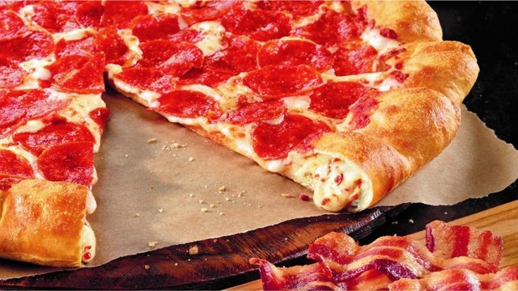

What are my favorite foods? Basically, McDonalds food, Burger King food, Wendy's food, KFC food, the Pizza Hut cheese crust pizza, other pizzas as well, and salads. The reasons that these are my favorites are basically because they are appealing. Well, I don't know what else to write on this page, so as always, time for the pictures.
